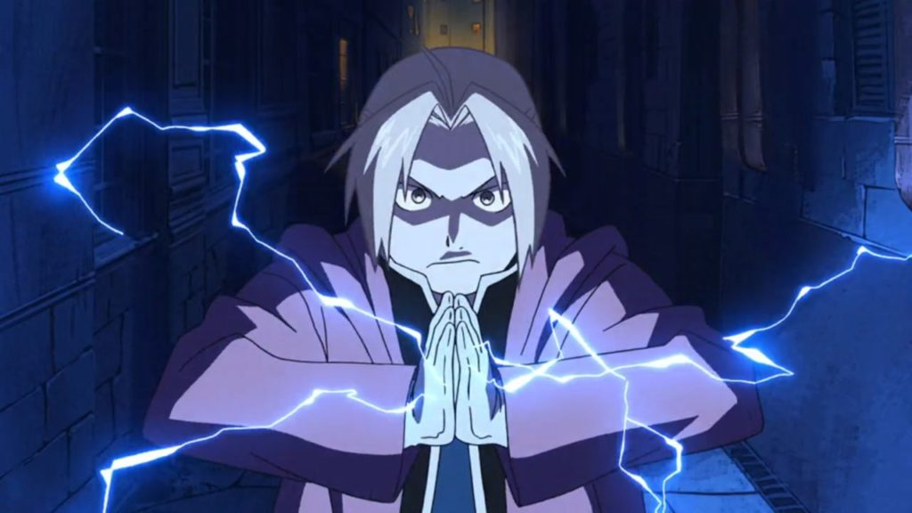

About Edward
Edward Elric is the main protagonist of Full Metal Alchemist (FMA). From the start of FMA he is youngest state alchemist in the history of Amestris. The power of alchemy allows the alchemist to manipulate matter and energy as long as they have a good understanding of the chemistry behind such manipulation. There most basic rule of alchemy is the law of equivelent exchange...something that cost Edward an arm and a leg to learn.
Edward performing alchemy.
Things about Edward
- He has an automail arm and leg (a high-tech prothetic available in the world of FMA)
- His brother, Alphonse Elric, lost his body the same time Ed lost his limbs. Thanks to Ed he survived by being soul bound to a suit of armor
- He hates milk
- Ed and Al both learned alchemy under Izumi Curtis, a tough woman they had to beg to be taught by
- Edward considers himself to be agnositc
- Edward keeps notes on alchemy coded to look as though it were a travelouge
Edward's Friends
Edward makes a lot of friends during his journey to get his limbs and Al's body back. His most consistant travel companion is the suit of armor occupied by Alphonse Elric's soul, his little brother. His other childhood friend, Winry Rockbell, becomes an automail engineer like her grandma and is the main mechanic for Ed's. Click on the links below to learn more about them: